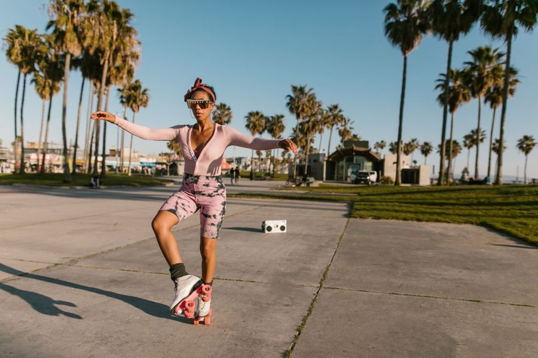
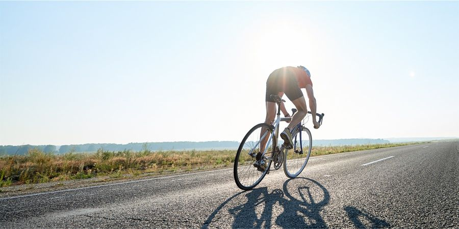

Skating
Gliding outdoors on skates — balancing, turning and picking up speed. It is fun, it keeps me fit, and it is a good way to clear my head after classes.
Outdoors · Balance & speedHobbies
Three things I love doing when I am not studying — moving, getting out on the road, and settling in with a good film or series.

Gliding outdoors on skates — balancing, turning and picking up speed. It is fun, it keeps me fit, and it is a good way to clear my head after classes.
Outdoors · Balance & speed
Cycling on open roads and around the neighbourhood — fresh air, exercise and a simple way to get around while enjoying the ride.
Outdoors · Exercise & fresh airSettling in with popcorn to watch a film or a series, from crime thrillers to comedies. A relaxing way to unwind and enjoy a good story.
Relaxing · Stories & popcornSkating. My favourite way to get moving — balance, speed and fresh air, and it always clears my head after a long day of classes.
Listening to music, spending time with friends and family, reading interesting stories, learning new things and exploring new places. Music helps me relax, lifts my mood and lets me express my feelings — I love listening to my favourite songs and discovering new ones through my playlist.